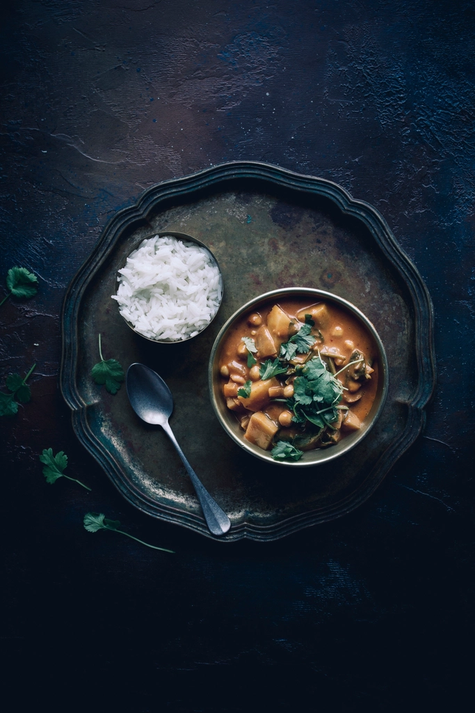
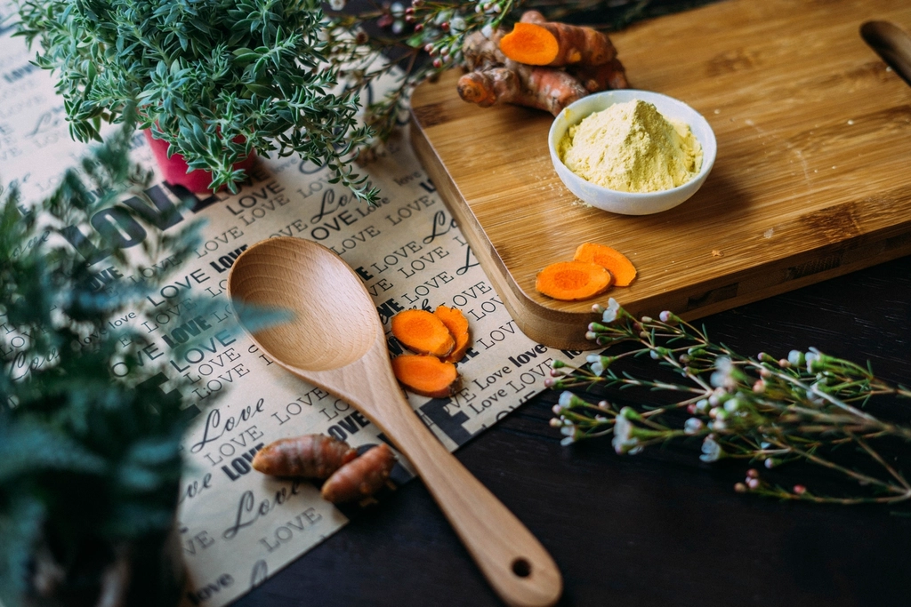

MENU
手で混ぜて楽しむ本場の一皿から、ほっとする和のランチ丼まで。
パラパラのバスマティライスに、チキンカレー・ダル（パリップ）カレー・日替わり野菜カレー、そして副菜を添えて。パパダン（豆せんべい）を砕いて混ぜ込むのが本場の楽しみ方です。お好みの小皿から自分の手で盛り付け、混ぜ合わせてお召し上がりください。
手食を推奨しており、清潔なビニール手袋をご用意しています。もちろんスプーン等でもお楽しみいただけます。

ライス＆カレーだけでなく、お酒と一緒に楽しめるおつまみメニューも充実。仕事帰りに一杯、という利用の仕方もできます。
瓶ビールなど、お酒もあわせてお楽しみいただけます。
スリランカ料理と合わせて、ほっとする和のランチ丼もご用意しています。日替わりの内容については、お電話または店頭にてご確認ください。
瓶ビールはおつまみとのセット提供も。食後には、香り豊かなセイロンティーが好評です。そのほかのドリンクメニューは店舗にてご確認ください。

クレジットカードがご利用いただけます。その他のキャッシュレス決済への対応につきましては、店舗にお問い合わせください。
ご予約・お問い合わせはお気軽にお電話ください。